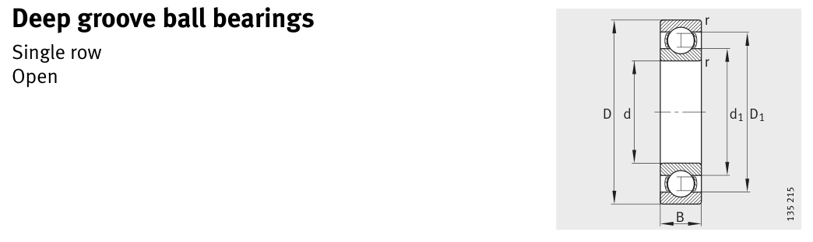

618/670-M is a FAG ball bearing, bore 670 mm, O.D. 820 mm, width 69 mm, dynamic rating 405 kN. Dimensions, drawing, interchanges and price.

Scanned from the manufacturer catalogue page listing this part number. All part numbers printed on that table share the same drawing.
Blue = inner / outer ring, yellow = rolling element. Drawn to scale from this part's own dimensions for selection reference only - not a manufacturing or assembly drawing.
| Symbol | Dimension | mm | inch |
|---|---|---|---|
| d | Bore diameter | 670 | 26.378 |
| D | Outside diameter | 820 | 32.2835 |
| B | Inner-ring / bearing width | 69 | 2.7165 |
| r | Chamfer (min) | 4 | 0.1575 |
Weights are given in kg. Load ratings are shown in both the original catalogue units and the converted value (1 N = 0.2248 lbf). Data is provided for selection reference only - confirm against the latest official catalogue before ordering.
| Bore d (mm) | 670 |
|---|---|
| Outside dia. D (mm) | 820 |
| Width B (mm) | 69 |
| Inner-ring OD d1 (mm) | 721.1 |
| Inner-ring shoulder dia. D1 (mm) | 770.3 |
| Basic dynamic load rating Cr (lbs) | 91048 |
|---|---|
| Basic static load rating Cor (lbs) | 183219 |
| Basic dynamic load rating Cr (N) | 405000 |
| Basic static load rating C0r (N) | 815000 |
| Fatigue limit load Cur (N) | 17700 |
| Limiting speed nG (rpm) | 1,500 |
| Reference speed nB (rpm) | 760 |
| Weight (kg) | 80.4 |
|---|
| Housing fillet r max (mm) | 4 |
|---|---|
| Shaft shoulder da (mm) | 684.6 |
| Housing shoulder Da (mm) | 805.4 |
| Housing fillet ra max (mm) | 3 |
| C / P | Equivalent load P (N) | L10 (106 rev) | L10h at 500 rpm |
|---|---|---|---|
| 4 | 101,250 | 64 | 2,133 |
| 6 | 67,500 | 216 | 7,200 |
| 8 | 50,625 | 512 | 17,067 |
| 10 | 40,500 | 1,000 | 33,333 |
| 15 | 27,000 | 3,375 | 112,500 |
Basic rating life per ISO 281: L10 = (C/P)3 with C = 405,000 N. Hours = L10 x 106 / (60n). Life-modification factors for lubrication, contamination and temperature (aISO) are not included.
| Brand | FAG |
|---|---|
| Source catalogue | FAG / Schaeffler Rolling Bearings HR 1 |
| Catalogue page | p.222 (dimensions) |
Load ratings in newtons, fatigue limit load Cur, limiting speed nG and reference speed nB.
| Designation | Brand | Type | d | D | B/T | Dyn. rating | kg |
|---|---|---|---|---|---|---|---|
| 618/500-M | FAG | Ball | 500 | 620 | 56 | 300 kN | 38.7 |
| 618/530-M | FAG | Ball | 530 | 650 | 56 | 305 kN | 41.3 |
| 618/560-M | FAG | Ball | 560 | 680 | 56 | 310 kN | 35.1 |
| 618/600-M | FAG | Ball | 600 | 730 | 60 | 355 kN | 54.2 |
| 618/630-M | FAG | Ball | 630 | 780 | 69 | 400 kN | 75.9 |
| 618/710-M | FAG | Ball | 710 | 870 | 74 | 465 kN | 96 |
| 618/750-M | FAG | Ball | 750 | 920 | 78 | 510 kN | 114 |
| 618/800-M | FAG | Ball | 800 | 980 | 82 | 550 kN | 136 |
Send us the quantity you need and we will come back with price and lead time, normally within 24 hours. Equivalent parts from other brands can be quoted at the same time.